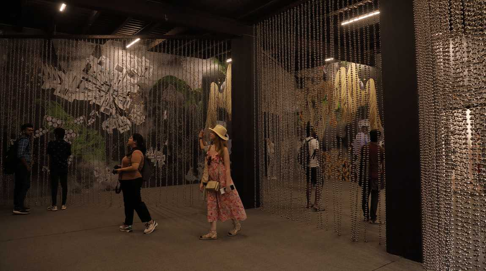

Image Credit - Kochi-Muziris Biennale
Kochi-Muziris Biennale
Inauguration of the 10th Anniversary of Kochi-Muziris Biennale
The Kochi-Muziris Biennale is an international exhibition of modern art that takes place in Kochi,
Kerala, India. It is both the greatest contemporary art festival in Asia and the largest art exhibition in
the nation. The Kerala State Government has supported the Kochi Biennale Foundation's proposal.